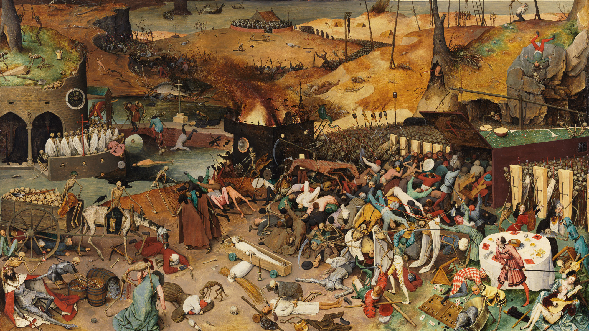
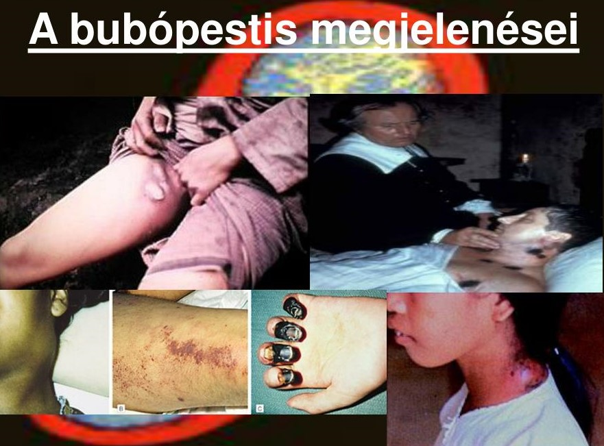
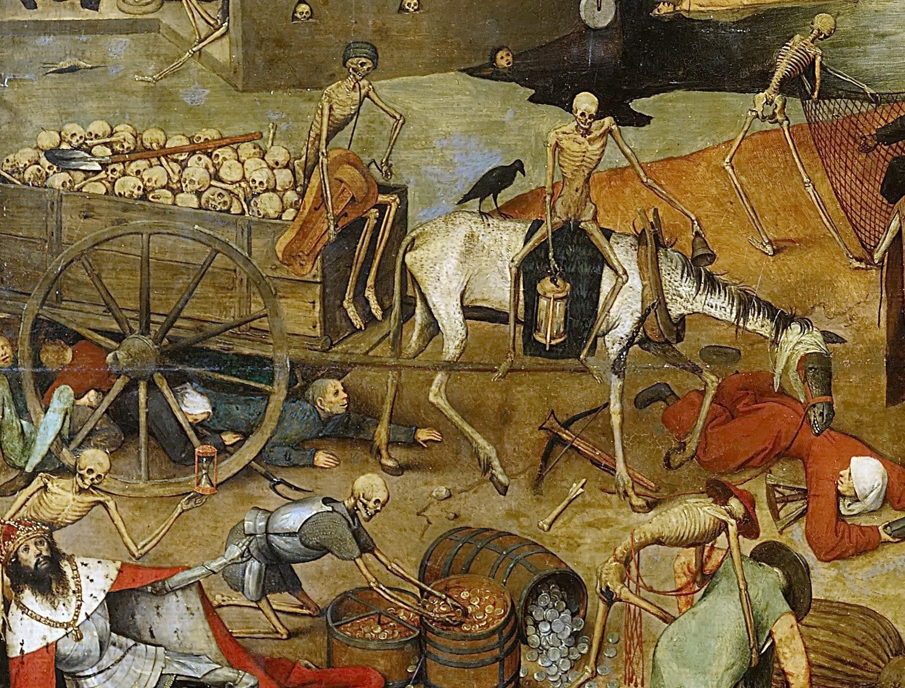

A pestis a Yersinia pestis nevű baktérium által okozott fertőző betegség.
Természetes hordozói a vadon élő rágcsálók (pl. patkányok), a betegség róluk terjed emberre.
A pestisnek két típusát különítjük el, úgymint bubópestis és tüdőpestis.
A lappangási idő rövid, 2-10 nap között van, de tüdőfertőzés esetén akár néhány órára is rövidülhet.
Bubópestis esetén a bőr alatti gennyes csomókban nagy számban gyűlnek össze bakétériumok, ahonnan a bolhák vérszívás során könnyen felvehetik azokat. Jellemző tünet még az orrvérzés, a nyugtalanság, a félrebeszélés, a tudatzavar és a láz. A gennyel teli fájdalmas, kékesre elszíneződött nyirokcsomók kifakadhatnak. A bubópestis kezelés nélkül a tünetek jelentkezésétől számított néhány napon belül a beteg halálát okozhatja.

A tüdőpestis gyors lefolyású (kezelés nélkül a tünetek jelentkezésétől számított 2-5 napon belül halált okoz), fájdalmas köhögéssel, légszomjjal, lázzal jár, kezelés nélkül tüdőödéma lép fel és összeomlik a keringés.
A szeptikémiás pestis nagyon gyors lefolyású (kezelés nélkül a tünetek jelentkezésétől számított 36 órán belül halált okoz), tünete magas láz, hidegrázás, fejfájás, bevérzések a bőrben és a belső szervekben. Keringési elégtelenség.
